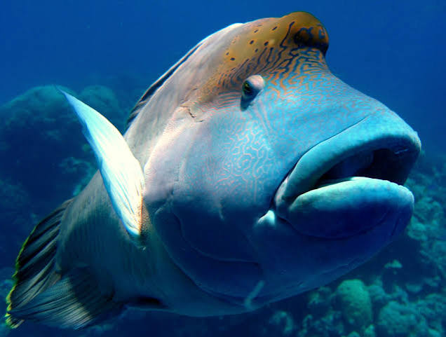
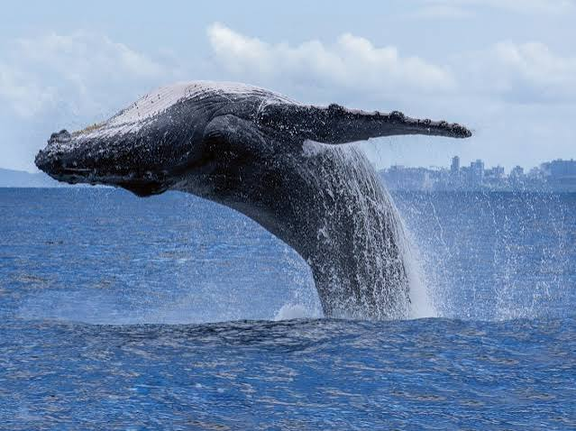
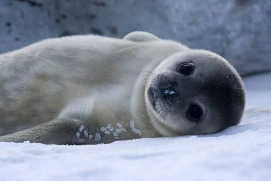
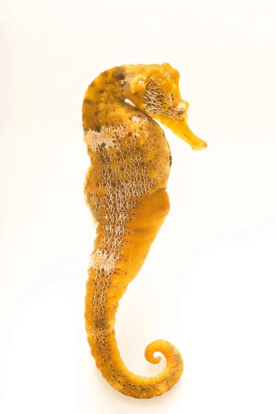
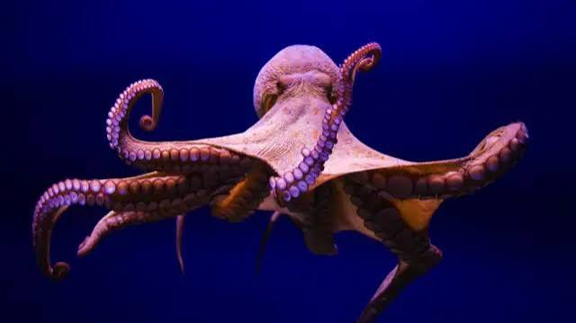
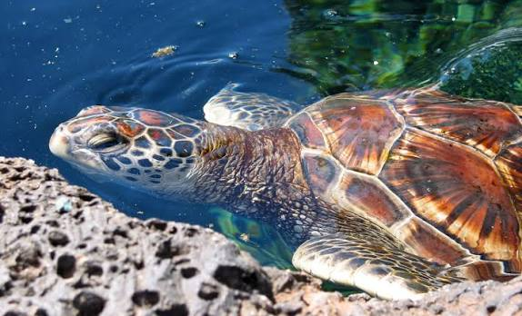
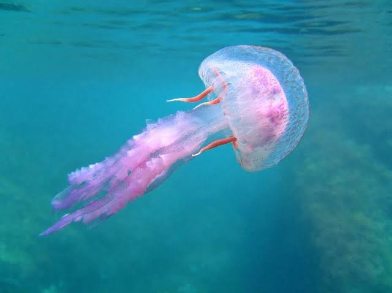
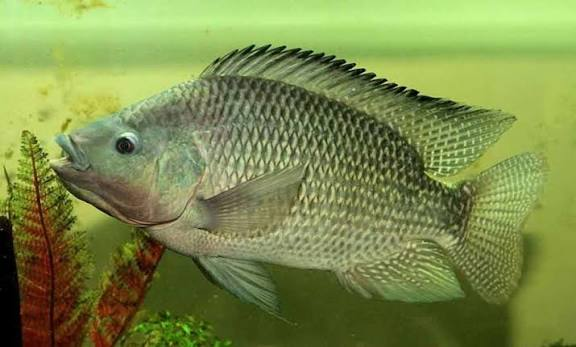
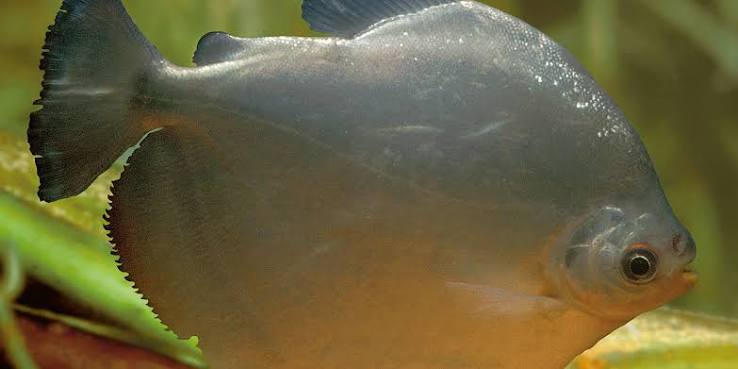
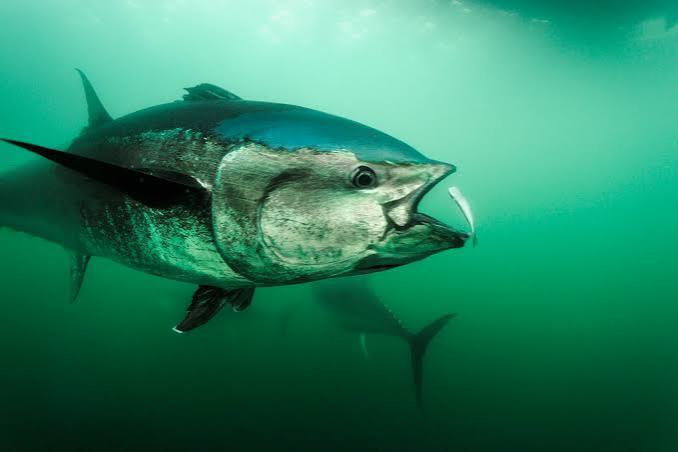

Bem vindo ao meu site
bem vindo ao meu site sobre peixes
Esse site é um site sobre seres marinhos
esse site é um site dedicado para apresentar seres mairnhos para minha audiencia.
Links sobre a vida marinha
nesta pagina estarão guardados varios links de artigos e videos sobre a vida marinha
Criaturas Marinhas:
a beleza da natureza no fundo do mar

A natureza é bela não importa onde no mundo.
Lista de criaturas marinhas
- Baleia azul

- Foca

- Cavalo Mariho

- Polvo

- Tartaruga Verde

- Água-Viva

- Tilápia

- Pacu

- Atum

Lista de tamanho medio das criaturas marinhas de maior para menor
- Baleia Azul; 26M
- foca; 1,7M
- atum; 1M
- polvo; 85cm
- Tartaruga verde e Pacu; 50cm
- Agua viva e Tilapia; 30cm
- Cavalo Marinho; 15cm
Quais desses animais vivem no Brasil?
- Baleia Azul
- Baleias azuis existem no brasil mesmo que seja extremamente raro encontrar uma
- foca
- Nao, elas nao habitam nosso pais de forma natural.
- Cavalo Marinho
- Sim, eles vivem ao longo de quase todo o litoral brasileiro, principalmente em
aguas calmas e rasas de manguezais, baias, recifes e bancos de algas
- Polvo
- Sim, eles vivem ao longo de quase todo o litoral brasileiro, principalmente em
costões rochosos e areas de recifes de coral.
- Tartaruga Verde
- vivem por todo o litoral brasileiro e desovam principalmente em ilhas oceanicas
- Água-viva
- são comuns em toda costa Brasileira, especialmente durante os meses mais quentes do ano
- Tilápia
- Sim, o país é o quarto maior produtor de tilápias no mundo
- Pacu
- Sim, o peixe de água doce nativo da america do sul existe no Brasil
- Atum
- Sim, o peixe é pescado na costa do país, especialmente na região nordeste do país
Selecione a criatura marinha que você mais se interessou por: